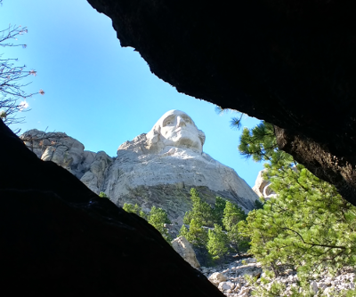

Mount Rushmore is a historic landmarck in the beautiful Black Hills of South Dakota. Designed by Gutzon Borglum featuring 4 of the greatest presidents of the United States etched into granite this site represents the heritage of the american people and their desire to forever mark the world in which they live. Started in 1927 the construction of this landmark brought a variety of people together to accomplish a single goal.
Mount Rushmore employed over 400 people, and its contruction spanned over 14 years, ending with the start of WWII. They took breaks in the winter For some, working on "The Faces" was just another job, but was a call for others. Some of the workers died later of silicosis, this was caused by the dust that the they inhaled while they were carving the granite.
